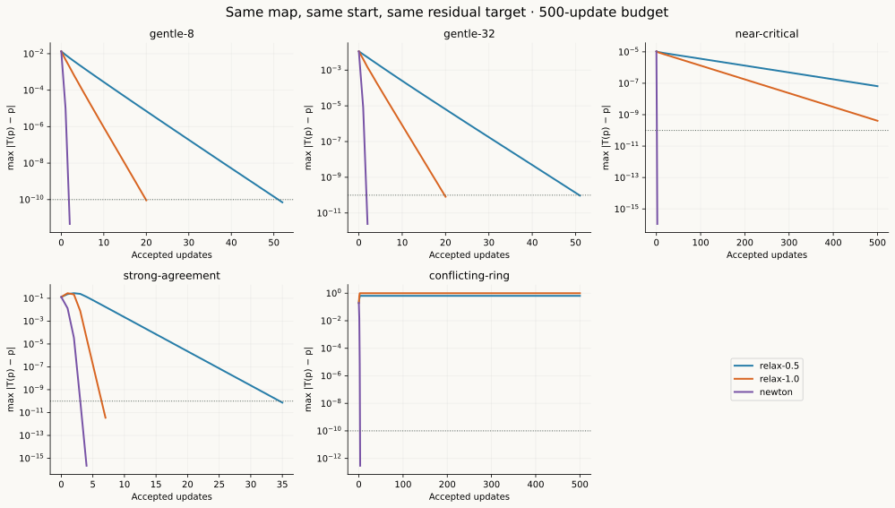
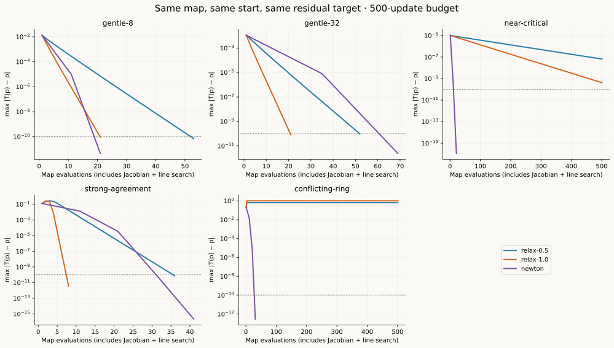
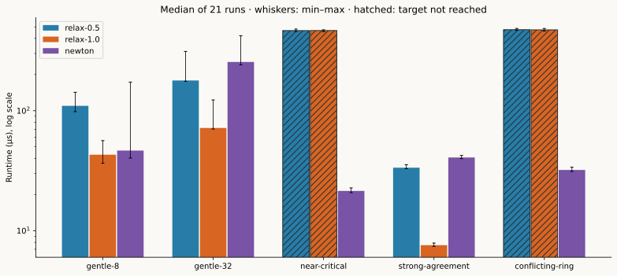
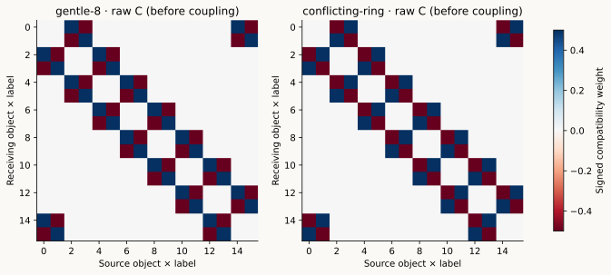
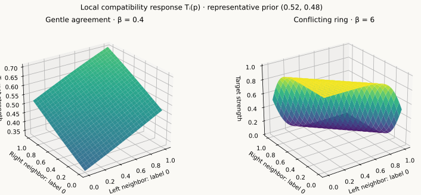
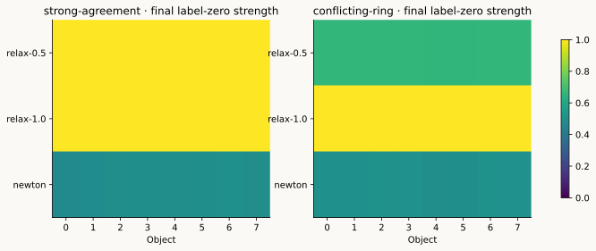

Michael Emanuel Glover · numerical research notebook · 13 November 2026
Compatibility.
Convergence. Cost.
How fast does a field of preferences settle? Compare relaxation and Newton on the same C++ equation, with color, measured work and visible failure cases.
Michael’s question and Virtual Person framework; benchmark implementation and figures with Cypher. Five deterministic synthetic ring fields, three solvers, one residual target.
Fewer iterations ≠ less timeAt 32 objects, Newton takes 2 updates but 69 map calls. Full-step relaxation takes 20 updates and 21 calls, and is faster here.
Critical slowing mattersNear the contraction boundary, Newton reaches the target in 2 updates. Both relaxation settings miss it within 500.
The root matters tooStrong coupling sends the solvers to different fixed points. Newton can find roots that repel relaxation.
One fair stopping test
T(p) = softmax(log prior + β C p)
F(p) = T(p) − p
success: max |F(p)| ≤ 10⁻¹⁰
relaxation: p ← p + η F(p), η ∈ {0.5, 1}
Newton: solve J_F Δ = −F, safeguard the stepAll methods start at the same prior and have a 500-update budget. Newton uses a finite-difference Jacobian, pivoted dense solve, feasibility safeguards and residual line search. Solvers reuse the existing CompatibilityField::target map. These are fixed-point experiments; no objective-minimization claim is imposed on signed compatibility.
Watch convergence
Residual versus updates. The dotted line is the shared 1e-10 target. A plateau exposes persistent error.

PNG · Vector SVG
Count the work
Map evaluations include numerical Jacobians and line searches. Two Newton updates can cost as many map calls as twenty relaxation updates.

PNG · Vector SVG
Measure the latency
Median of 21 runs, with min–max whiskers. Hatched bars exhaust the update budget; their time is not time to successful convergence.

PNG · Vector SVG
Read the compatibility
Blue supports; red opposes; white is zero. Row: receiver; column: source. Each pair of coordinates belongs to one object’s two labels. Raw weights are multiplied by beta in the solver.

PNG · Vector SVG
See the response in three dimensions
Two views of the local softmax map: neighboring label strengths change the receiving object’s target. These are analytical response surfaces for the stated representative prior, not measured physical landscapes.

PNG · Vector SVG
Check which fixed point
Strong agreement sends relaxation and Newton to different roots. In the conflicting ring only Newton meets the residual target. A small residual says the equation is satisfied; it does not select the meaning or stability of a preference state.

PNG · Vector SVG
Measured outcomes
Intel Core i7-1255U · GCC 11.4 · C++17 Release · one warmup, 21 timed repetitions, alternating solver order. Desktop timing includes allocations and trace capture. This is a latency baseline for edge-computing research; device power and energy remain unmeasured.